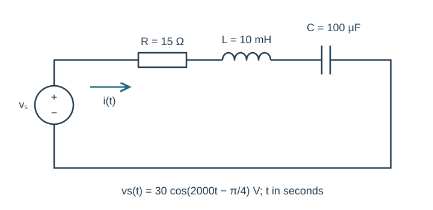
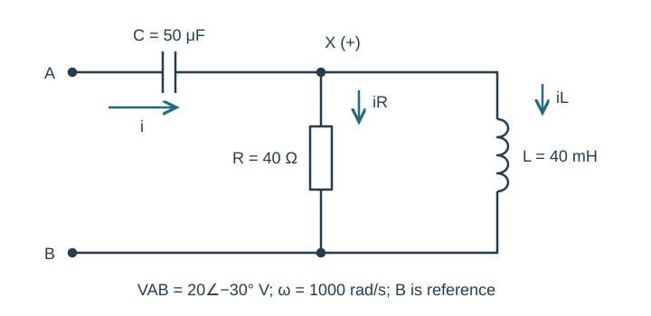
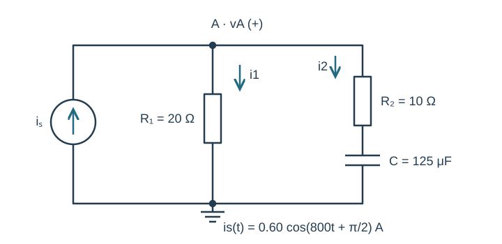
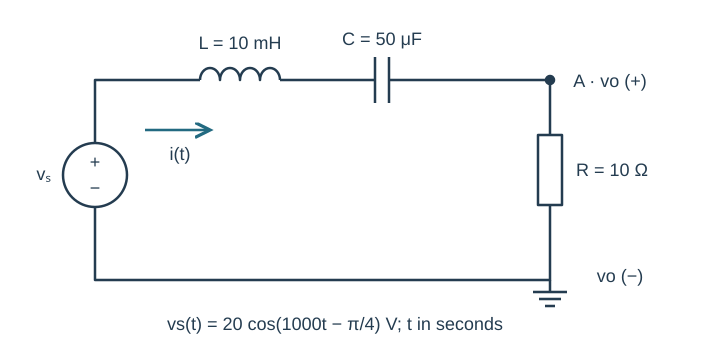
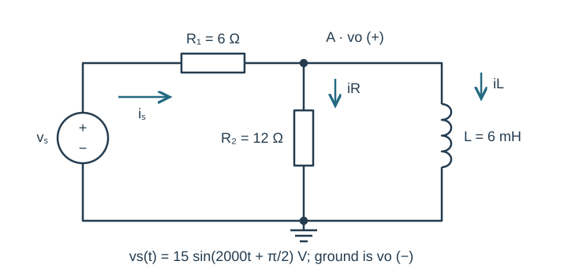

Course practice / Batch 11 / 2026-10-11 PDT
ENGR 202
正弦、相量与阻抗
Sinusoids, phasors & impedance · 第 11 组：HW 1 风格 5 题 + HW 2 风格 5 题
Find the first events of a phase-leading voltage
A zero-offset sinusoidal voltage has peak amplitude 9 V, frequency 125 Hz, and cosine-reference phase +60°. Use t in seconds.
- Find angular frequency and period, and write the voltage as a positive-amplitude cosine with phase in radians. Give its peak phasor.
- Find v(0), the first downward zero crossing, first minimum, and first positive maximum at or after t = 0. Report event times in ms.
- Sketch one cycle on labeled time/voltage axes and mark those events in chronological order.
中文提示（不含解答）
已有正相位会让某些事件提早出现；求“首次”事件时要选择非负的时间。
Recognize the same signal before applying a delay
Let \(x(t)=3\cos(400t-7\pi/4)\;\mathrm V\), \(y(t)=3\sin(400t+3\pi/4)\;\mathrm V\), and \(z(t)=x(t-\pi/1600\;\mathrm s)\).
- Decide whether x and y are identical for every t. Write cosine-reference peak phasors for x, y and z with principal phases.
- Find the delay applied to x in ms and as a fraction of the common period. State its phase change.
- Compare x(0), z(0), x(T/4) and z(T/4), and sketch the phasors on equal-scale complex axes.
中文提示（不含解答）
相位加减整圈不改变波形；统一成余弦参考后，再处理时间延迟。
Different magnitudes can still cancel product phase
Let \(a=3+j4\) and \(b=6-j8\).
- Calculate a + b, ab and a/b in rectangular form.
- Convert a, b, ab and a/b to polar form with positive magnitudes and principal phases in (−180°,180°].
- Check (a/b)b = a. Explain why ab is a positive real number even though a and b are not conjugates of each other, and plot a and b to scale.
中文提示（不含解答）
比较 b 与 a 的共轭之间的比例；乘法相位相加，除法相位相减。
Add a cosine to a shifted sine
The total voltage is \(v(t)=4\cos(1200t)+8\sin(1200t+\pi/6)\;\mathrm V\).
- Write both peak phasors with a cosine reference and find their sum in rectangular and polar form.
- Write one positive-amplitude cosine for v(t). Verify the original and combined forms at t = 0 and t = π/2400 s.
- Draw a tip-to-tail addition plot with equal real/imaginary scales in volts. Explain which sign the shifted sine contributes to the total imaginary component.
中文提示（不含解答）
先把正弦的相位减去 90°；原式中的加号不代表相量的虚部一定为正。
Choose an amplitude to remove the sine component
Consider \(v(t)=A\cos(500t+\pi/6)+4\sin(500t)\;\mathrm V\), where the unknown real amplitude A is nonnegative. The desired total is a positive multiple of \(\cos(500t)\), with no sine term.
- Express the total cosine-reference phasor in terms of A and find the required A.
- Give the resulting total phasor and single-cosine expression. Check v(0) and v(π/1000 s).
- Draw the two selected component phasors and their sum. Explain how the cancellation condition differs from setting the total amplitude to zero.
中文提示（不含解答）
先让相量虚部为零，再检查剩下的实部是否为正。
Track three series voltage drops with a lagging source phase
The source \(v_s(t)=30\cos(2000t-\pi/4)\;\mathrm V\) drives series R = 15 Ω, L = 10 mH and C = 100 μF. Current is clockwise from the source positive terminal; element voltages are passive drops along that current.
- Draw the impedance circuit. Find source, total-impedance and current phasors in rectangular and polar form.
- Write i(t), find VR, VL and VC, and check that they sum to Vs. State whether current leads or lags source voltage and by how much.
- Predict i(0) and i(π/4000 s) and check their signs from the time-domain expression.

中文提示（不含解答）
电流的相位是源相位减去总阻抗相位；各元件电压都按同一被动符号约定计算。
A reactive interior can give a real input impedance
At ω = 1000 rad/s, terminal A connects through C = 50 μF to node X. R = 40 Ω and L = 40 mH each connect from X to terminal B. Apply VAB = 20∠−30° V peak. Define input current from A to X, both branch currents from X to B, and B as the voltage reference.
- Find each component impedance, the parallel equivalent ZXB, and total ZAB. Give the total in rectangular and polar form.
- Find input current and VX relative to B. Explain whether the source voltage and input current are in phase.
- Find both load currents and the capacitor drop from A to X. Verify KCL and VAB = VC + VX.

中文提示（不含解答）
输入端的总虚部为零，并不意味着每个内部电压或支路电流都与输入同相。
Keep the current-source phase in a two-branch node
The source \(i_s(t)=0.60\cos(800t+\pi/2)\;\mathrm A\) injects current upward into node A. One branch from A to ground is R₁ = 20 Ω. A second branch is R₂ = 10 Ω followed by C = 125 μF in series. Define vA positive at A and both branch currents downward.
- Draw the impedance circuit, find total admittance and equivalent impedance, and state the source phasor.
- Find VA in rectangular/polar form and write vA(t). Find both branch-current phasors and verify KCL.
- Evaluate vA(0) and vA(π/1600 s). Explain why the second branch can have a negative real current component without having a negative phasor magnitude.

中文提示（不含解答）
支路的串联阻抗要先合并，再与另一支路相加导纳；保留源相量的 +90°。
Read a grounded resistor output in a three-element loop
The source \(v_s(t)=20\cos(1000t-\pi/4)\;\mathrm V\) drives a series loop in this order: L = 10 mH, C = 50 μF, and R = 10 Ω. The lower end of R and source negative terminal are grounded. Node A is between C and R; vo is measured from A to ground with A positive. Current follows the loop from the positive source terminal through L, C and R.
- Draw the impedance circuit and calculate the source phasor, total impedance, and current.
- Find Vo by voltage division and write vo(t). Calculate VL and VC, and verify Vs = VL + VC + Vo.
- Predict vo(0) and vo(π/2000 s). Compare the phases of source voltage, current and resistor output.

中文提示（不含解答）
输出跨在电阻上，分子只用 R；电感和电容仍都在分压的分母里。
A loaded RL divider driven by an equivalent cosine
The source \(v_s(t)=15\sin(2000t+\pi/2)\;\mathrm V\) connects through R₁ = 6 Ω to node A. R₂ = 12 Ω and L = 6 mH each connect from A to ground. Output vo is positive at A. Source current flows through R₁ toward A, and load currents are downward.
- Find the cosine-reference source phasor, parallel-load impedance, total input impedance and source-current phasor.
- Find Vo in rectangular/polar form and write vo(t). Calculate both load currents and the R₁ drop; verify KCL and KVL.
- Predict vo(0) and vo(π/4000 s). For optional LTspice, give frequency in Hz and sine-source phase. Compare these two points in a late steady-state cycle after transients settle, with labeled units and reference directions.

中文提示（不含解答）
先识别给定正弦是否能简化为零相位余弦；并联负载的两条支路共享同一输出电压。